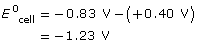
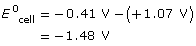
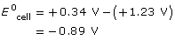

Module 4—Batteries and Balance
Explore
Read
In previous science courses you may have seen how applying electrical energy to a solution caused chemical change. Electrolysis, the process of applying an electrical current to a system, is used to cause chemical reactions. In Lesson 2 you learned that electric cells, voltaic cells for example, involve a spontaneous electrochemical change. What kind of change occurs in an electrolytic cell? Read pages 639–640 in the textbook to learn about the scientific principles behind the operation of an electrolytic cell.
You may wish to save a copy of “Table 1” from page 640 in your course folder as a reminder of the similarities and differences between the two types of electrochemical cells: electric and electrolytic.
To get a clear understanding of the differences between the behaviours of electric and electrolytic cells, read “Secondary Cells: Electric and Electrolytic” on page 640 of the textbook. Does it make sense that a rechargable cell can be described as both an electric and an electrolytic cell, but that the cell can't be both at the same time?
Self-Check
SC 1. Complete “Practice” questions 1–4 on page 640 of the textbook.
Self-Check Answers
Contact your teacher if your answers vary significantly from the answers provided here.
SC 1.
Practice 1. At the cathode of an electrolytic cell, the oxidizing agent gains electrons and is reduced. At the anode of the cell, the reducing agent loses electrons and is oxidized.
Practice 2. In a voltaic cell, the cathode and anode are designated positive and negative respectively. In an electrolytic cell, the designations are the opposite.
Practice 3. In an electrolytic cell, electrons move through the external circuit from anode to cathode. Cations migrate toward the cathode, and anions migrate toward the anode.
Practice 4. The pumping of water into the tower is similar to the recharging of a secondary cell because energy is applied to drive a change (by applying a current to force a chemical reaction to occur in the cell). When water flows from the tower, it does so due to gravity. This spontaneous process is similar to the discharging of the secondary cell in which the chemical energy is converted into electrical energy.
Try This
Electrolysis of Potassium Iodide
In the next activity you will watch a video showing the electrolysis of a solution. The system you will observe is an aqueous potassium iodide solution that will be placed in a U-tube. A carbon electrode will be placed in each end of the tube. The carbon electrodes will be connected to a source of electricity.
Complete the following questions about the system before you view the video. The questions will prepare you to anticipate the events and changes you will observe in the video. As you complete the questions, recall the techniques that you used to predict redox reactions and that you applied in your study of voltaic cells. Remember to carefully scan the states of substances in half-reactions, as they may help you identify observable changes that will occur as the cell operates.
TR 1. What are the strongest oxidizing and reducing agents in this system?
TR 2. What are the half-reactions for the strongest oxidizing and reducing agents in this system?
TR 3. Describe one observable change you would expect to see at each of the electrodes, and describe a diagnostic test you could perform to confirm the result.
TR 4. Calculate the Eºcell for this system. What does this value represent in terms of operating the cell?
 Watch and Listen
Watch and Listen
View the video “Electrolysis of Potassium Iodide.” Record your observations and replay sections of the video to confirm your answers to questions TR 1–TR 3.
You may wish to read pages 641–642 in the textbook. This reading provides an in-depth explanation of the events observed in the video and will also confirm your answers to questions TR 1–TR 4.
Read
Read “Summary” on page 642 of the textbook. Work through “Communication example 1” and “Communication example 2” on pages 643 and 644.
Self-Check
SC 2. Complete “Practice” questions 5 and 6 on page 644 of the textbook.
Self-Check Answers
Contact your teacher if your answers vary significantly from the answers provided here.
SC 2.
Practice 5.
a. cathode: Ni2+(aq) + 2e– → Ni(s)
anode: 2 I–(aq) → I2(aq) + 2e–
net cell: Ni2+(aq) + 2 I–(aq) → Ni(s) + I2(aq)
A minimum voltage of +0.80 V is required.
b. cathode: (2 H2O(l) + 2e– → H2(g) + 2 OH–(aq)) × 2
anode: 4 OH–(aq) → O2(g) + 2 H2O(l) + 4e–
net cell: 2 H2O(l) → 2 H2(g) + O2(g)

A minimum voltage of +1.23 V is required.
Practice 6.
a. 
The minimum voltage required is +1.48 V. Note that the oxidizing agent is Cr3+ and the reducing agent is Br-.
b. 
The minimum voltage required is +0.89 V. Note that the oxidizing agent is Cu2+ and the reducing agent is H2O.
Self-Check
In previous science courses you may have seen the electrolysis of water that makes hydrogen and oxygen gases. In Module 3 you learned about disproportionation reactions, a type of electrochemical reaction in which the same species acts as the oxidizing and the reducing agent. The electrolysis of water is another example of a disproportionation reaction.
SC 3. What are the oxidation and reduction half-reactions involved in the electrolysis of water?
SC 4. What technical consideration is necessary to make the electrolysis of water possible?
Self-Check Answers
Contact your teacher if your answers vary significantly from the answers provided here.
SC 3.
reduction (cathode): 2 H2O(l) + 2 e– → H2(g) + 2 OH–(aq)
oxidation (anode): 2 H2O(l) → O2(g) + 4 H+(aq) + 4 e–
SC 4. Pure water does not conduct an electric current; therefore, a flow of charge would not be possible within an electrolytic cell containing pure water. Often the water has a small quantity of sodium sulfate added to it prior to electrolysis. The sodium ions and the sulfate ions in the system are spectator ions, but they are essential to allowing the cell to complete the flow of charge necessary for the transfer of electrons to occur.
Self-Check

In a laboratory, the device used to collect the gases produced by an electrolysis is called a Hoffman’s apparatus. The solution within the apparatus is electrolyzed, and the gases are collected in a chamber above each of the electrodes.
SC 5. Predict the products of the electrolysis of an aqueous sodium chloride solution using a Hoffman’s apparatus.
Self-Check Answers
Contact your teacher if your answer varies significantly from the answer provided here.
SC 5. The strongest oxidizing and reducing agent in this system is water; therefore, the expected products are as follows:
- hydrogen gas and hydroxide ions (cathode; basic pH)
- oxygen gas and hydrogen ions (anode; acidic pH)
Watch and Listen
View the video “Electrolysis of Aqueous Sodium Chloride.” Observe the Hoffman’s apparatus for examples of change, especially in the parts of the cell above each of the electrodes. Do your observations confirm the predictions you made in your answer to SC 5?
Read
Read “Evaluation of Predicted Reactions—The Chloride Anomaly” on page 645 of the textbook to learn about the unique result obtained from the electrolysis of aqueous chloride solutions.